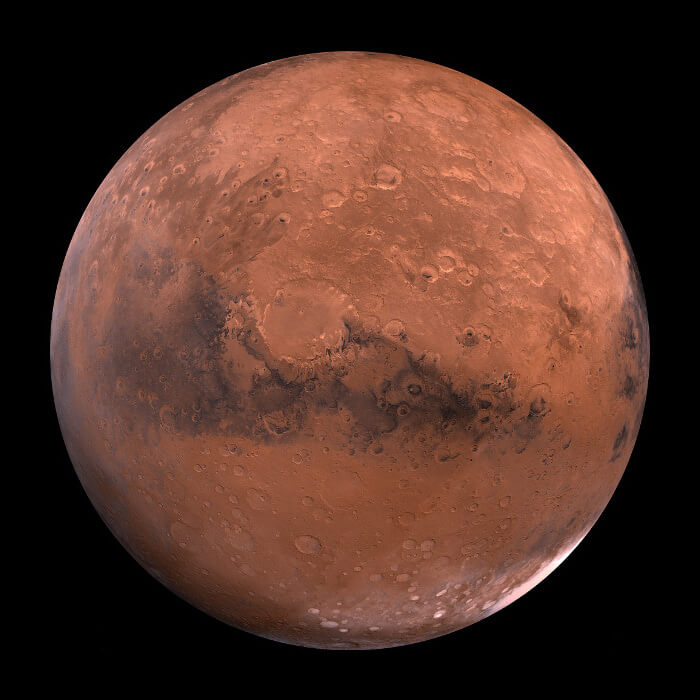

PHASE 01
Project and scope definition
I began by defining the mission boundary and the specific problem the system needed to address: an unmanned mission capable of locating and supporting the extraction of near-surface natural resources on Mars. The concept phase was intentionally broad, with few budget constraints and substantial freedom in how the architecture could be developed. That freedom allowed me to explore the problem at the system level before narrowing the design space.